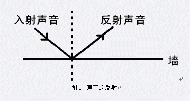
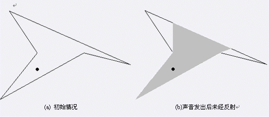
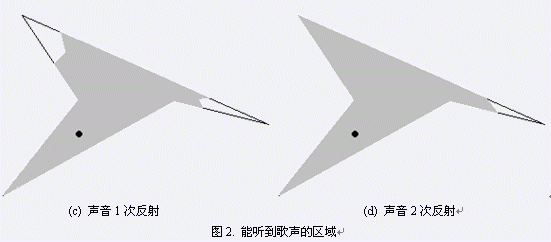

在瑞典的达拉纳洲有一座高山。山上有一个小屋，里面住着一位牧羊女。每天清晨，隔壁的山头会传来一阵悠扬的
长笛声，而牧羊女则会站在屋里用自己的歌声回应。小屋的俯视图是一个有n个顶点的简单多边形，每一面墙可以
反射声音，但是由于不可避免的能量损失，最多只能反射k次（k=0表示不能反射声音）。墙面非常光滑，因此声音
的反射遵循反射角等于入射角，如图1。墙角不能反射声音，而每面墙的其他部分——即使离墙角很近——都可以
反射声音。
 图1.
声音的反射 突然有一天，牧羊女问自己：在小屋的哪些地方能听到她的歌声？假设所有听众都在屋里靠墙而坐，
那么歌声能到达的墙一共有多长？图2的四幅示意图分别画出了初始情况和声音经过0、1、2次反射后到达的区域。
灰色部分表示能听到歌声的部分，黑点表示牧羊女的位置。本题所求即灰色部分在多边形边界上的总长度。

(a) 初始情况 (b)声音发出后未经反射
 (
c) 声音1次反射 (d) 声音2次反射图2. 能听到歌声的区域